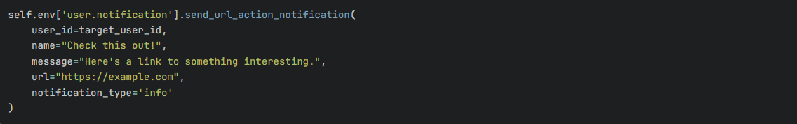

Types of Notifications
1. Window Notifications
Desktop notifications that appear even when the browser tab is not active.
2. Record Notifications

Notifications linked to specific Odoo records with direct access.
3. URL Notifications

Clickable notifications that redirect to specific URLs.
4. Normal Notifications
Standard notifications for general system messages and updates.